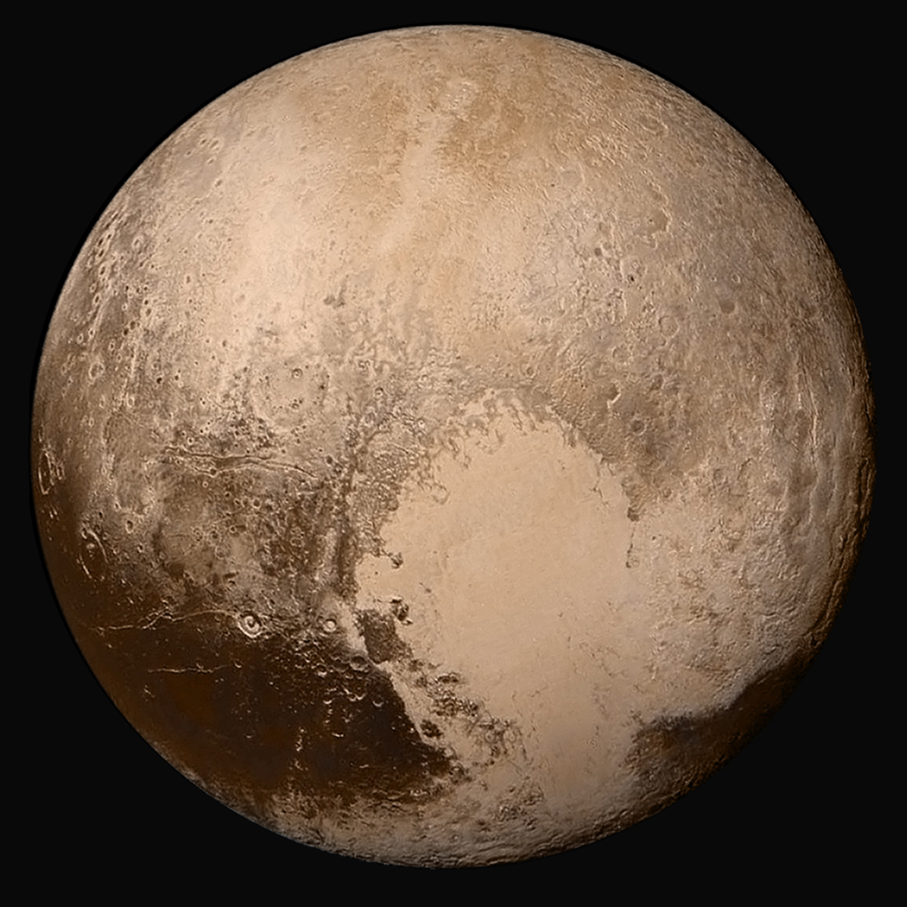

Les planètes naines sont de petits corps qui gravitent autour du Soleil.
Pluton
Pluton est la première planète naine a avoir été découverte. Il a d'ailleurs été classé dans les planètes au début, jusqu'au 30 juin 2006. Pluton a été découvert le 18 février 1930 par Clyde Tombaugh.
Eris

Eris a été découverte en 2005, par Mike Brown, Chad Trujillo et David Rabinowitz.
C'est Eris qui a provoqué la rétrogradation de Pluton au rang de planète naine. En effet, il est en orbite bien plus loin que Pluton, mais légèrement plus gros. Pouvait-on le considérer comme une dixième planète ? Cela a provoqué une réflexion, car si il doit exister des centaines de corps de la taille de Pluton. En 2006, à L'Union astronimique internationale, il est décidé que Puton et Eris seront des planètes naines. (voir ici, en anglais)
Makemake
Makemake, nommée ainsi en l'hnneur d'un dieu de l'île de Pâques, a été découverte en 2005, comme beaucoup de planètes naines.
Hauméa
Hauméa, qui porte le nom d'une déesse hawaïenne, a été découverte le 28 décembre 2004, et a malgré sa petite taille intégré les planètes naines en 2008.